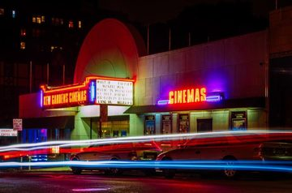

← Anterior
Reisen & Tourismus
Siguiente →
Essen & Kochen


Vocabulario para hablar de tus aficiones, planes de fin de semana y actividades de ocio. Fundamental para hacer amigos alemanes.
| Alemán | Español |
|---|---|
| lesen | leer |
| Musik hören | escuchar música |
| fernsehen | ver televisión |
| Filme sehen | ver películas |
| Sport treiben / machen | hacer deporte |
| kochen / backen | cocinar / hornear |
| reisen | viajar |
| fotografieren | fotografiar |
| tanzen / singen | bailar / cantar |
| Freunde treffen | quedar con amigos |
| malen / zeichnen | pintar / dibujar |
| Gitarre spielen | tocar guitarra |
| Karten spielen | jugar cartas |
| im Garten arbeiten | trabajar en el jardín |
| stricken | tejer |
| Alemán | Español |
|---|---|
| Fußball spielen | jugar fútbol |
| schwimmen | nadar |
| laufen / joggen | correr / jogging |
| Rad fahren | andar en bicicleta |
| wandern | hacer senderismo |
| ins Fitnessstudio gehen | ir al gimnasio |
| Tennis spielen | jugar tenis |
| Ski fahren | esquiar |
| Basketball spielen | jugar baloncesto |
| klettern | escalar |
| Yoga machen | hacer yoga |
| angeln | pescar |
| Alemán | Español | Ejemplo |
|---|---|---|
| sich verabreden | quedar de verse | Wir haben uns für Samstag verabredet. |
| Lust haben auf | tener ganas de | Hast du Lust auf Kino? |
| vorschlagen | proponer | Ich schlage vor, wir gehen wandern. |
| zusagen / absagen | confirmar / cancelar | Leider muss ich absagen. |
| abholen | pasar por alguien | Ich hole dich um sieben ab. |
| der Treffpunkt | el punto de encuentro | Unser Treffpunkt ist der Bahnhof. |
| die Eintrittskarte | la entrada, el boleto | Ich habe zwei Eintrittskarten für das Konzert. |
| ausverkauft | agotado | Das Konzert ist leider ausverkauft. |
| der Verein | el club | Ich bin in einem Fußballverein. |
| das Mitglied | el socio, el miembro | Ich bin Mitglied im Fitnessstudio. |
| die Veranstaltung | el evento | Am Wochenende gibt es viele Veranstaltungen. |
| Alemán | Español | Ejemplo |
|---|---|---|
| wandern | hacer senderismo | Am Sonntag wandern wir auf der Schwäbischen Alb. |
| Rad fahren | andar en bici | Ich fahre jeden Tag Rad. |
| joggen | correr, trotar | Ich jogge dreimal pro Woche. |
| schwimmen gehen | ir a nadar | Im Sommer gehen wir im See schwimmen. |
| Ski fahren | esquiar | Im Winter fahren viele Deutsche Ski. |
| klettern | escalar | In der Halle kann man klettern. |
| grillen | hacer carne asada | Im Sommer grillen wir im Park. |
| der Spaziergang | el paseo a pie | Nach dem Essen machen wir einen Spaziergang. |
| die Radtour | el paseo en bici | Wir machen eine Radtour am Neckar. |
| Lo correcto | Por qué | No digas |
|---|---|---|
| Ich spiele Fußball. | deporte con pelota: spielen | Ich mache Fußball. ✗ |
| Ich gehe gern schwimmen. | gern va después del verbo | Ich gern gehe schwimmen. ✗ |
| Ich interessiere mich für Musik. | interesarse por: für | Ich interessiere mich in Musik. ✗ |
| Hast du Lust auf Kino? | tener ganas de algo: Lust auf | Hast du Lust für Kino? ✗ |
| Ich fahre Rad. | andar en bici: Rad fahren | Ich gehe Fahrrad. ✗ |